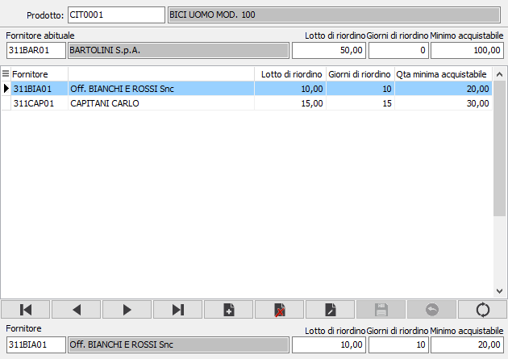

Fornitori preferenziali
La procedura consente di impostare sia il fornitore abituale, il lotto di riordino, i giorni di riordino e la quantità minima acquistabile del prodotto gestiti anche dall'anagrafica base, che di inserire ulteriori fornitori con relativo lotto di riordino, giorni di riordino e quantità minima acquistabile.
Nella parte alta della finestra è presente il prodotto con il fornitore abituale, il lotto di riordino, i giorni di riordino e la quantità minima acquistabile; non è consentito inserire prodotti nuovi, ma è possibile modificare i dati presenti; sul codice del prodotto è attiva la funzione di ricerca (F9) sull'anagrafica prodotti.
Nella parte bassa della finestra è possibile inserire ulteriori fornitori con relativo lotto e giorni di riordino e quantità minima acquistabile collegate al prodotto correntemente visualizzato. I dati presenti vengono utilizzati dalla generazione richieste di offerta a fornitori per creare le alternative di offerta per prodotto relativamente ai fornitori preferenziali presenti.
